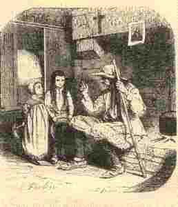

Kentel Fest ar Vugale
Ton
|
1.Didostait aman, bugale,
Da gleved eur gentel nevez, A zo bet savet evidoc'h; Kemerit poan d'he zeski bloc'h.. 2.Pa zihunet en ho kwele Roet ho kalon da Zoue Gret sin-ar-groaz, lâret goude Gant feiz, ha spi, ha karantez, 3. Lâret : "Me ro deoc'h, ma Doue, Ma c'halon, ma c'horf, ma ene Gret ma vin den mat, ma Doue, Pe mervel kent ma teuy an deiz" 4. Benedicite, kent ar pred, Ha grasoù, goude, lavaret Marteze n'ho po boued bepred Ma n'hoc'h eus koun deus o lâret 5. Lâret a ra an evnigoù Kludet er c'hoad war ar brankoù 'Vit ur greun ed, 'vit ur preñvig Ya, 'vit ul lomm glizh, ul lommig 6. Ha pa it da ward ho loened Kemeret ur wialenn red Ha pa eo pred noz d'o distreiñ Distroit-i gant aon rak ar bleiz |
7. Na wall-bedet morse gante
Mard eo ret gourdrouz, lâret dehe : "Boit-hu ! boit-hu ! loen divergont Na laeret ket geot ar person ! 8. Boued al louarn, boued ar morvran, Da gorf-te ne ve morse leun Ah ! mar gellan erru ganeoc'h Me werzho ker ma fazoù deoc'h" 9. Pa welet ur vran o nijal Soñjet en diaoul ken du, ker fall Ha pa welet ur goulmig wenn Soñjet en ael ker mat, ker gwenn 10. Soñjet a sell ouzoc'h Doue Evel an heol deus lein an neñv Soñjet ho laka da vleuniañ 'Vel an heol roz-gouez Komana 11. Ha pa gomzet ouzh tud ho ti Lâret : ma breur, ma c'hoar , ha c'hwi Komzet an eil ouzh egile Gant onestiz ha karantez 12. Enoret, bugale, doujet An noblañs, an dudjentiled Enoret an dud a iliz Komzet outo gant onestiz |
13. Na dremenet ket na bourc'h na kêr
Lec'h a vo Jezuz, hor Salver, Hep e adoriñ a galon Hag ugent deiz 'po a bardon 14. Ar Sakramant, pa he gefet Heuliet-eñ kammed-ha-kammed Gant roue ar sent hag an aelez Vijec'h bet e gwir en deiz-se 15. Da c'houel ar Sakramant meulet Ar re vo fur a vo lakaet Da daol't bleunioù kaer dirak eñ O c'hortoz ma taolint en neñv 16. En noz, a-barzh mont da gousket Lâret ho pedennoù bepred Ma teuy un ael gwenn deus an neñv D'ho tiwall ken na teuy an deiz 17. Setu, bugale, an dro-vat Da vevañ e kristenien vat Sentet eta diouzh ma c'hentel Ha c'hwi reno ur vuhez santel |
Texte source tiré du 2ème carnet de collecte de La Villemarqué

|
P. 11
Var. dialecte de Vannes [1] Dénicheit aman bugale De gleùet ho kwerz a neùé, A zou bet sauet evid hoc'h. Kemeret poen d'hi deskein bloc'h. 2. [2] Pe zihunet enn ho kwele, Kaignet ho kalon da Zoué P. 12 Groet sin ar groez, laret neuzé Get fé ha spi ha karanté: (v) [les deux vers suivants sont entourés] "Men doué euit mest m'ho kemeran Enn ho madeléac'h mé esper a ran 3. [3] Kaignet arré de Zoué (a ran doc'h ma Doué) Me kalon, me gorf, ma iné. = ( Groa d'in but den mad, ma Doué . Pe mervel, ken ma teui me heur-me.= 10. [11] Pe gomzeit doc'h tud ho ti Laret : "Mem breur, me c'hoer, ha c'hui !" Komzet enn eil doc'h erghilé Ghet honestiz ha karanté : 4. [4] Benédicité kent er pred Ha gras goudé ne vanket ket! Ne vilitet ked hou pout boed Ma ne peuz sonj oc'h ho laret. (v) hon spi ne dolant meit ar ur galon a guit hac a oaid. ("Calon Jesus" p. 2.) [=Ne rejette notre espoir qu'un coeur qui s'éloigne et qui saigne. Only with fleeting or bleeding heart do they reject our hope.] |
[En marge à droite, en face du couplet 4]
5. [5] Laret a ra an évnigou, Gludid er c'hoed Evit eur gren ad, vid eur brevik, Vid eur lom glouiz, eul lomik. 5. [6] Pen d'éet de warn ho loenned, Kemeret eur wialenn red, Hag à pe vo red ho distroein Distroet he c'hoah ghet ho kwalenn. P. 13 / 7 6. [7] Ne wall-pedet morsé ghet hé Mar bé ré kiz laret d'é-hé : =” Beit-hu, baillez, loen divergont Net ket arré de brad 7. [8] Boed el luern (x), boed er valvran Te gorf-te ne vé morsé lan. Met mar ghellonn erru genhoc'h, Me werc'hei ker me fazeu d'hoc'h.” 11. [12] ( Dakoret enor ) Rentet-hui inour ha respet. D'ann noblans, d'ann duchentiled D''ann holl duchentilet bepred! Respetet ann dud a ilis Prezeget oc'h he get honestis 12. [13] Ne tremenet na borc'h na ker Lec'h ha vo galon hor Salver, Heb ( mond d'he bedein ) hen adorein a galon, Hag uighent de po a bardon. (x) Comme le roi des Arvernes Luernius (ar moul). [selon l'imprimeur?] Roi des Arvernes (II s. av. J-C), cité dans la Géographie" de Strabon (IV,2,3). "Enfin le fait suivant peut donner une idée de l'opulence et du faste de Luer(n)ius , père du fameux chef Bituit qui livra bataille à Maximus et Domitius: Pour faire montre de sa richesse aux yeux du peuple, il aimait à se promener en char dans la campagne en jetant de droite et de gauche sur son passage des pièces d'or et d'argent que ramassait la foule empressée à le suivre." "Luern"="Louarn"="renard". |
13. [14] Pen dei ar zakramant ar veaz [incert.] (pa gafiet,) Heuliet de ve poz ha poz ( ha kamet ha kamet ), P. 14 Get roué ann dud hag ann elé E fé bet é gwir enn dé-sé [En marge à droite] 8. [9] Pa welet eur vran o nijal, Sonjet, m'an diaol ken du, ken fal, Ha pa welet, eur goulmik wen, Sonjet, ma ken douz ho ael gwenn. 9. [10] Sonjet a zell ouzoc'h Doué Evel ann heol a c'hoez Sonjet hen ho lak da vleuni Vel an heol roz gwez ar grec'hren [En marge à gauche verticalement] 14. [15] Da gwel ar zakramant meulet Ar re vo fur a vo laket, Da doll bleuniou dirag Hen, Da c'hortoz me rint barz ann eon. 15. [16] Enn noz pa iefer da gousket ; Lar ho pedeneu a vo red Ma teui en ael gwen hag an é D'hou tiwall ken a tei ann dé. 16. [17] Chetu bugale er feson De vevein el gwir gristenion. Zentet éta d'oc'h me c'hentel Ha c'hui rei eur maro santel Italiques : au crayon [entre crochets]: ajouté par l'éditeur. Petits caractères : nos commentaires. |